Située au sommet du Corcovado (ou « bossu »), à plus de 700 mètres d’altitude, la statue du Christ rédempteur est sans aucun doute l’un des monuments les plus admirés du monde. Une promenade qui commence dans le quartier de Cosme Velho, à bord d’un petit train. Une route mène aussi en sommet, et parcourt des décors insolites, mêlant odeurs tropicales et vues imprenables sur la « cidade maravilhosa ».

La Baie de Guanabara
La première expédition navale portugaise entra dans la baie de Guanabara le 1er janvier 1502. Parce que les navigateurs croyaient avoir affaire à une rivière et qu’on était au mois de janvier, l’endroit fut baptisé Rio de Janeiro, le fleuve de janvier. Quant au nom Guanabara, il vient de la langue indigène tupi, et signifie « sein de la mer ».
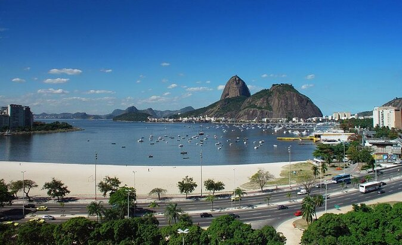
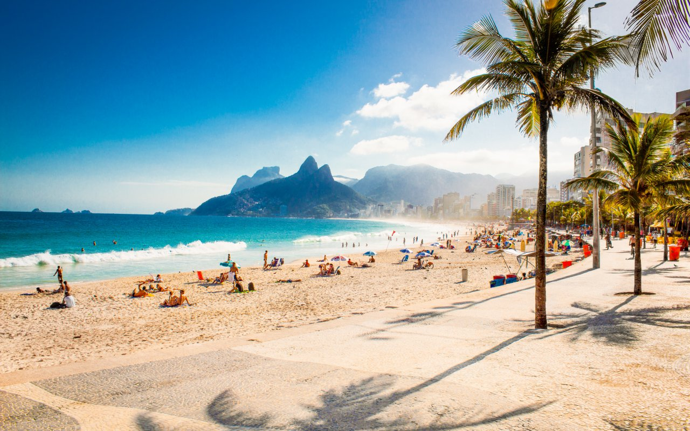
Le Pain de Sucre
Par son imposante hauteur (400 m alt.), le Pain de Sucre est, tout comme le Corcovado, un site touristique incontournable. Il offre l’une des plus belles vues sur Rio et en est l’un des symboles. On y accède en deux temps grâce à un téléphérique, avec un arrêt à Morro Da Urca. Depuis le Pain de Sucre, on peut apprécier la vue des diverses plages de Rio et de Niteroi.
Le carnaval de Rio de Janeiro
Le Carnaval de Rio est l'événement touristique le plus important de la municipalité de Rio et la fête nationale la plus populaire au Brésil, en particulier à Rio de Janeiro. Il est devenu un vrai synonyme de la célébration du carnaval dans le pays et même au monde. Il a lieu tous les ans durant les 4 jours qui précèdent le mercredi des Cendres, qui est le jour qui marque le début du carême.
En 2018, le carnaval de Rio s'est tenu du 9 au 14 février, en 2019 du 2 au 9 mars, en 2020 du 21 au 26 février. Les réjouissances commencent après le signal du Rei Momo. À l'occasion du Carnaval, le maire lui transmet les clefs de la ville, l'aidant à trouver sa reine, une jeune fille choisie pour sa beauté et son expérience de la samba. Celle-ci gouvernera la ville durant les trois jours du carnaval.
Carnaval de rue
À Rio, le carnaval débute dans les rues de la ville avec les bals pré-carnavalesques, les défilés des batucadas et des blocos. Généralement, un bloco est organisé par les habitants d'un quartier et défile dans les rues de ce quartier. Ces défilés commencent bien avant le carnaval, les premiers se tenant plus de 3 semaines avant le début officiel des festivités.
Pendant le carnaval, des bals sont organisés dans les différents clubs de la ville. La mairie fait également des bals populaires ouverts à tous dans certains lieux traditionnels de la ville, comme Cinelândia.
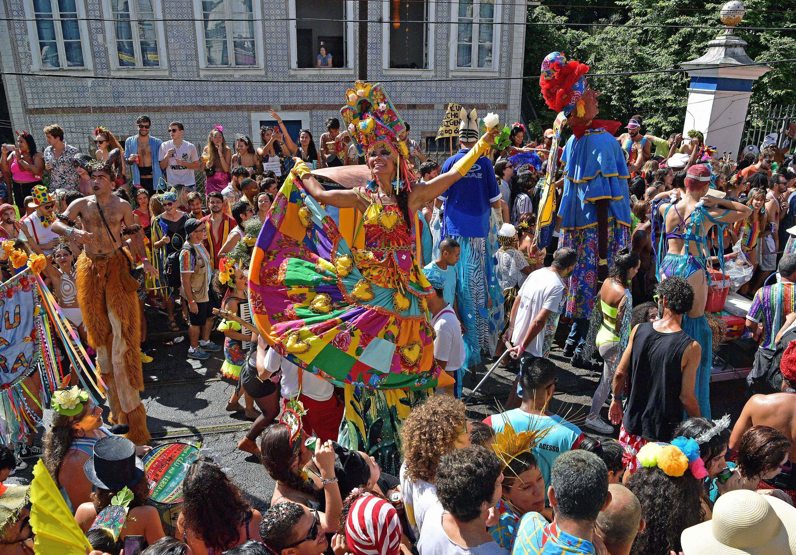
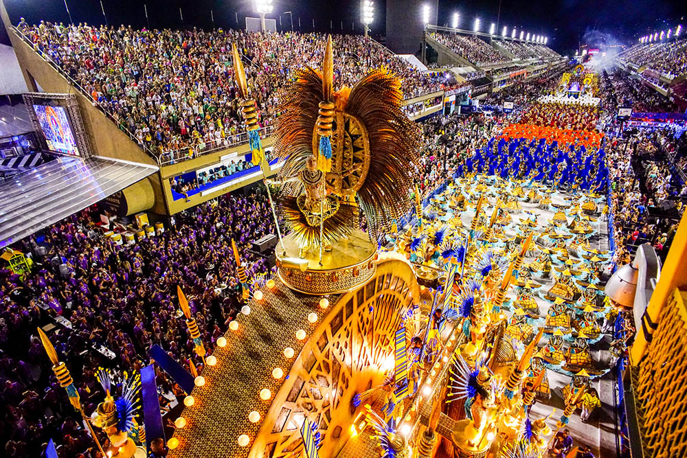
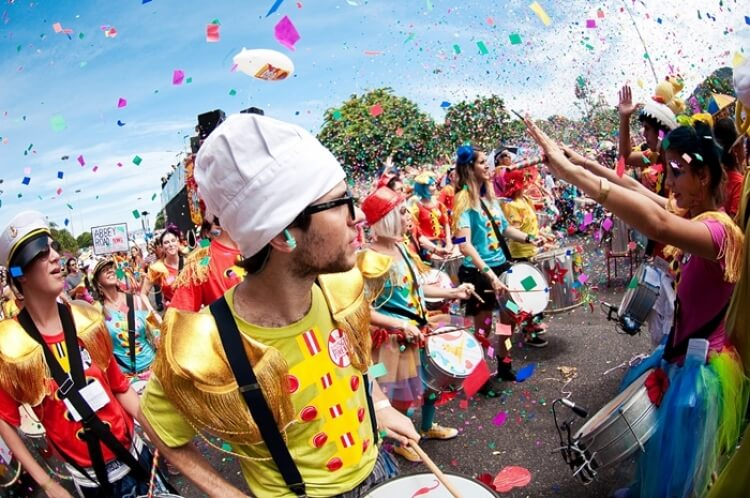
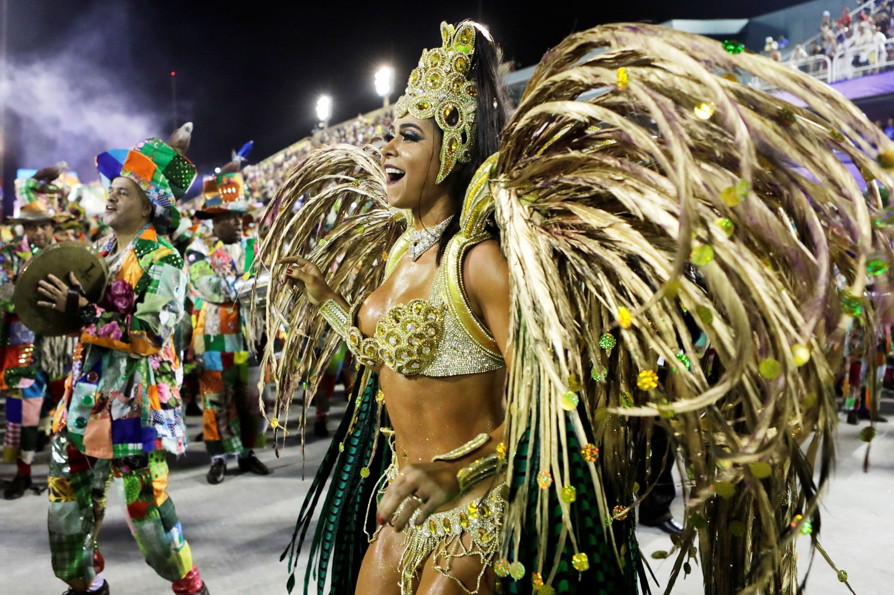
Rio De Janeiro est une ville animée,magnifique et très festive.C'est pourquoi nous aimerons visiter cet endroit si beau et si divertissant.
Venha para o rio você não vai se decepcionar!!! 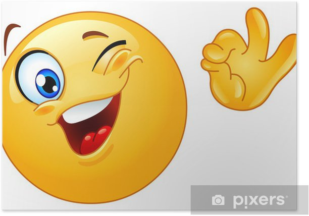
Située au sommet du Corcovado (ou « bossu »), à plus de 700 mètres d’altitude, la statue du Christ rédempteur est sans aucun doute l’un des monuments les plus admirés du monde. Une promenade qui commence dans le quartier de Cosme Velho, à bord d’un petit train. Une route mène aussi en sommet, et parcourt des décors insolites, mêlant odeurs tropicales et vues imprenables sur la « cidade maravilhosa ».
La Baie de Guanabara
La première expédition navale portugaise entra dans la baie de Guanabara le 1er janvier 1502. Parce que les navigateurs croyaient avoir affaire à une rivière et qu’on était au mois de janvier, l’endroit fut baptisé Rio de Janeiro, le fleuve de janvier. Quant au nom Guanabara, il vient de la langue indigène tupi, et signifie « sein de la mer ».
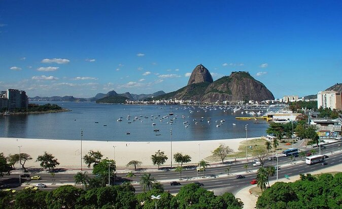 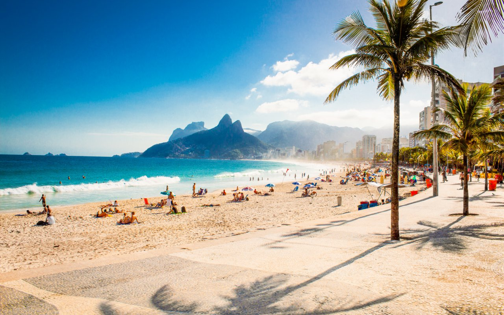Le Pain de Sucre
Par son imposante hauteur (400 m alt.), le Pain de Sucre est, tout comme le Corcovado, un site touristique incontournable. Il offre l’une des plus belles vues sur Rio et en est l’un des symboles. On y accède en deux temps grâce à un téléphérique, avec un arrêt à Morro Da Urca. Depuis le Pain de Sucre, on peut apprécier la vue des diverses plages de Rio et de Niteroi.
Le carnaval de Rio de Janeiro
Le Carnaval de Rio est l'événement touristique le plus important de la municipalité de Rio et la fête nationale la plus populaire au Brésil, en particulier à Rio de Janeiro. Il est devenu un vrai synonyme de la célébration du carnaval dans le pays et même au monde. Il a lieu tous les ans durant les 4 jours qui précèdent le mercredi des Cendres, qui est le jour qui marque le début du carême. En 2018, le carnaval de Rio s'est tenu du 9 au 14 février, en 2019 du 2 au 9 mars, en 2020 du 21 au 26 février. Les réjouissances commencent après le signal du Rei Momo. À l'occasion du Carnaval, le maire lui transmet les clefs de la ville, l'aidant à trouver sa reine, une jeune fille choisie pour sa beauté et son expérience de la samba. Celle-ci gouvernera la ville durant les trois jours du carnaval.
Carnaval de rue
À Rio, le carnaval débute dans les rues de la ville avec les bals pré-carnavalesques, les défilés des batucadas et des blocos. Généralement, un bloco est organisé par les habitants d'un quartier et défile dans les rues de ce quartier. Ces défilés commencent bien avant le carnaval, les premiers se tenant plus de 3 semaines avant le début officiel des festivités. Pendant le carnaval, des bals sont organisés dans les différents clubs de la ville. La mairie fait également des bals populaires ouverts à tous dans certains lieux traditionnels de la ville, comme Cinelândia.
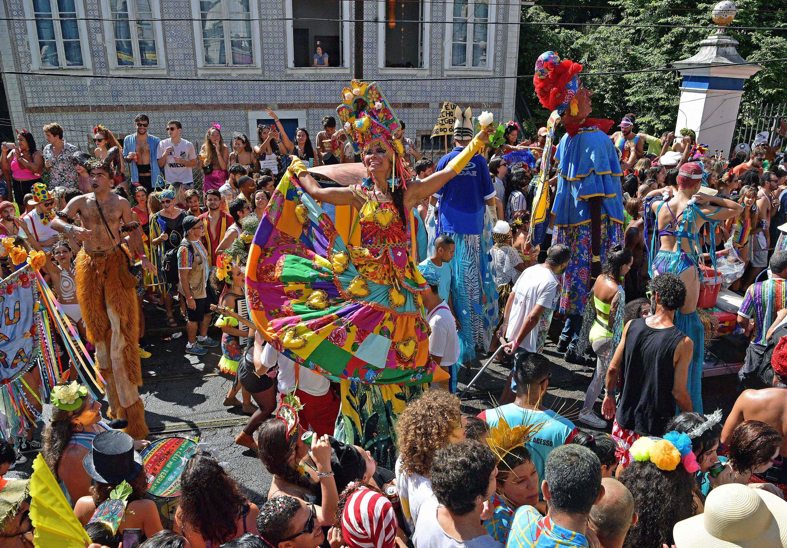 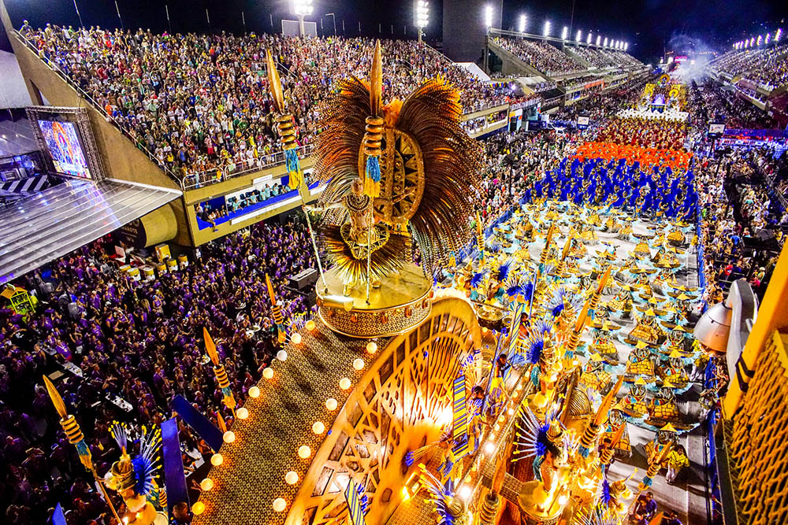 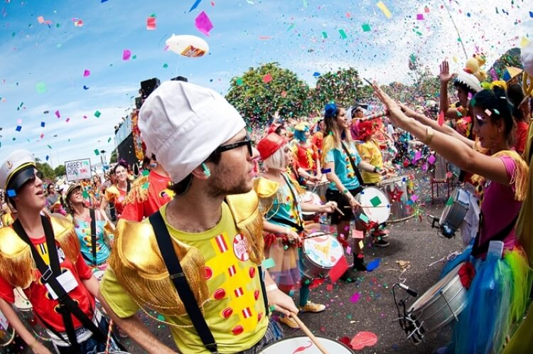 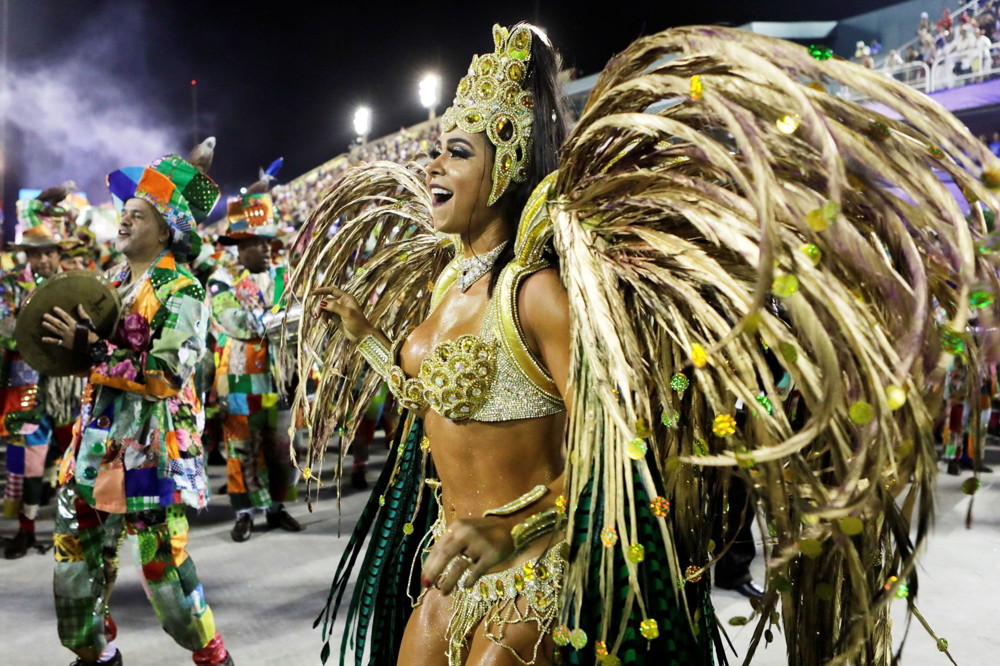Rio De Janeiro est une ville animée,magnifique et très festive.C'est pourquoi nous aimerons visiter cet endroit si beau et si divertissant.
Venha para o rio você não vai se decepcionar!!! 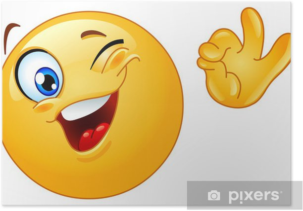